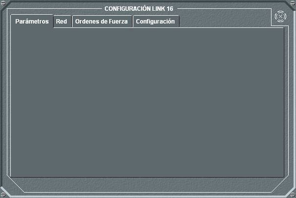
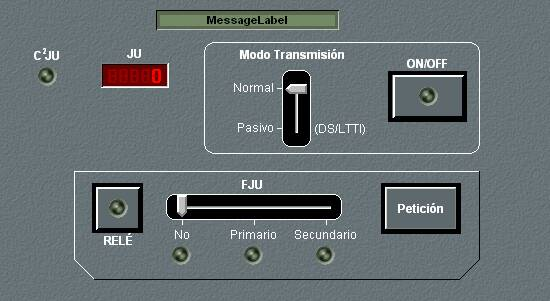
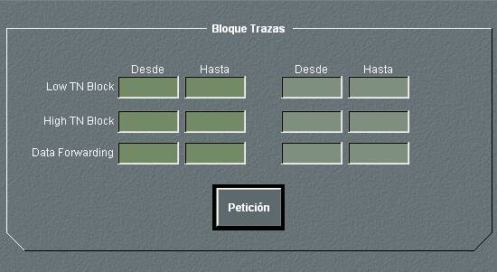

Link 16

El panel de detalle del Link 16 presenta cuatro solapas que corresponden a diferentes opciones de configuración del equipo. Pulsando en la solapa Parámetros, se muestra el siguiente panel de detalle

En este panel se observa el número de JU asignado y si esta unidad es C2JU. Desde este panel pueden ejecutarse las siguientes acciones:
- Encender / Apagar el equipo, pulsando el botón ON/OFF. En las unidades submarinas solo se puede encender el equipo si están en superficie o tienen un mástil con antena para la banda correspondiente izado.
- Establecer el Modo de Transmisión del equipo, seleccionando entre Normal y Pasivo.
- Establecer el rol en la Red, seleccionando entre FJU Primario, FJU Secundario o no FJU. Esta opción solo es válida si la unidad es C2JU. También puede seleccionarse la opción Relé, que habilita a la unidad para hacer de relé entre distintas redes Link 16.
Pulsando en la solapa Red, se muestra el siguiente panel de detalle

En este panel de detalle se muestra la lista de las unidades integrantes de la red en al que se encuentra la unidad propia.
Pulsando en la solapa ForceOrder, se muestra el siguiente panel de detalle

Este panel se utiliza para gestionar las órdenes de enganche y asignación. Para poder emitir Force Orders debe haberse dotado de esa capacidad a la unidad en Preparación.
Las acciones que pueden ejecutarse desde este panel son:
- Seleccionar unidades Atacante y Blanco. Cuando en la pantalla táctica se pone en Hook una unidad y en Marca otra, al pulsar el botón Unidades se seleccionan la unidad en Hook como atacante y la unidad en Marca como Blanco, apareciendo sus identificadores en los campos correspondientes.
- Seleccionar el tipo de orden. Pulsando el botón Engage o Assigned, se selecciona el tipo de Force Order a enviar a la unidad Atacante, entre enganchar o asignado.
- WILCO: Cuadrado Rojo
- CANTCO : cuadrado (rojo) y línea en blinking.
- HAVECO: cuadrado (verde)
- ASSIGNED : cuadrado (negro)
- Consultar la lista de Force Orders enviadas y recibidas. En esta lista se muestra el tipo (enviada o recibida), la unidad que la envía, la unidad atacante, el blanco, la orden y la respuesta. En la parte inferior izquierda del panel existe una barra de desplazamiento que permite filtrar la lista, de forma que se muestren solamente los mensajes enviados, los recibidos o todos.
- Enviar Respuesta a una Orden recibida: Seleccionando una Force Order de la lista y una respuesta utilizando la barra de desplazamiento correspondiente (WILCO, HAVECO, CANTCO), al pulsar el botón Respuesta se envía la respuesta al emisor de la orden.
Cuando se envía una orden, tanto en la pantalla gráfica del FO como en la de la unidad atacante aparece una línea discontinua que une la unidad atacante y la atacada. Además, la unidad atacada será rodeada por un símbolo que depende de la respuesta recibida de la unidad atacante.
Pulsando en la solapa Configuración, se muestra el siguiente panel de detalle

En este panel de detalle se pueden ejecutar las siguientes acciones:
- Modificar los bloques de trazas asignados a la unidad. Introduciendo sus valor inferior (Desde) y sus valores superiores (Hasta) de los bloques (Low TN, High TN y Data Forwarding), al pulsar el botón Petición se modifican los bloques de trazas y se actualizan los campos correspondientes. El Link 16 comienza numerando las trazas dentro del bloque Low, y una vez completado este bloque continúa por el High. El sistema asigna números de trazas por orden dentro del bloque correspondiente, saltando los números ya hayan sido empleados para otras trazas de la red.
Notas:
- Los contactos propios sin clasificar no son transmitidos por Link-16.
- Los contactos propios que coincidan con información de Link-16, desaparecerán automáticamente sin hacer blinking de los mismos.
- Las detecciones serán numeradas dentro del bloque de trazas correspondiente a la unidad según el orden de entrada en las mismas, el primero que entre en la red pondrá el símbolo de los contactos e informa de los mismos.
- Al entrar la unidad a formar parte de la red Link la simbología y numeración que prevalece será la de la red, manteniéndola aunque se salga de la red.